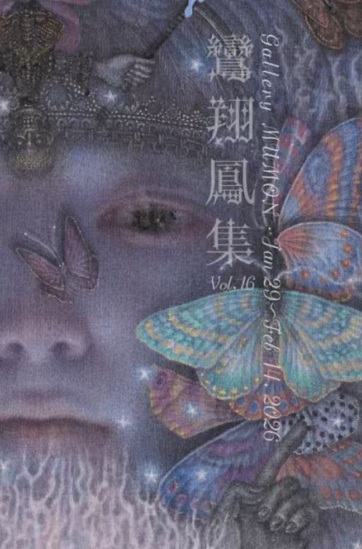
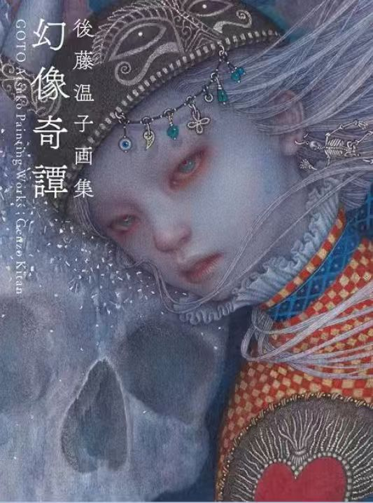

The group exhibition "Ran-Syo-Ho-Shu vol16" will take place from Thursday, January 29 to Saturday, February 14, 2026, at Gallery MUMON, located at 4-13-3 Ginza, Chuo-ku, Tokyo, 104-0061. The gallery will be open daily from 11:00 am to 7:00 pm, and closed on Mondays and Sundays. This exhibition will follow a lottery method format and features works by artists Amanatshu Aono, Maya Ishii, Souichiro Ishikawa, Kanako Ohya, Masanori Koike, Takumi Suzuki, Kensuke Takahashi, feebee, YUE, Suzuka Yoshida, Mingjun Lin, and Atsuko Goto.

This is the first painting collection of Goto Atsuko released in 2022. It included over 12 paintings of Astuko.
Prologue:
Dreams, the mysterious phenomena, have always fascinated me since I was a little girl.
For me, painting implies dreaming. This is one of the themes of my work. The act of painting
is the
same as the phenomenon of dreaming……
Guardian , painting publication, watercolor on cotton cloth
Vow , on sell, printing of watercolor
Genzo Kitan , book on sell, signed book